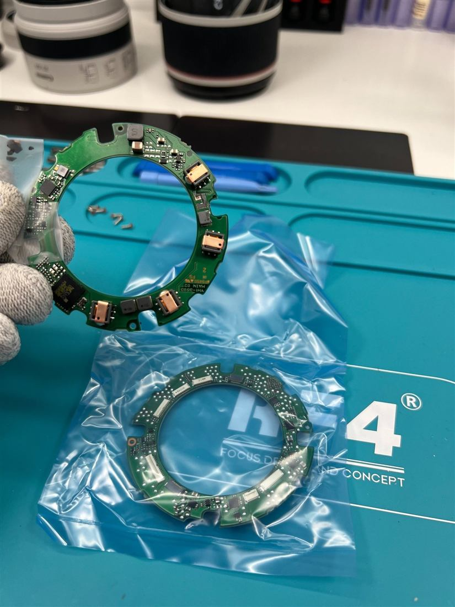

Reparación de cámaras y objetivos
Diagnosticamos y reparamos cámaras réflex, mirrorless y objetivos. Te explicamos qué tiene tu equipo y te damos presupuesto antes de tocar nada.
- Canon, Nikon, Sony y Panasonic
- Cámaras de foto y de vídeo
- Objetivos, monturas y electrónica
